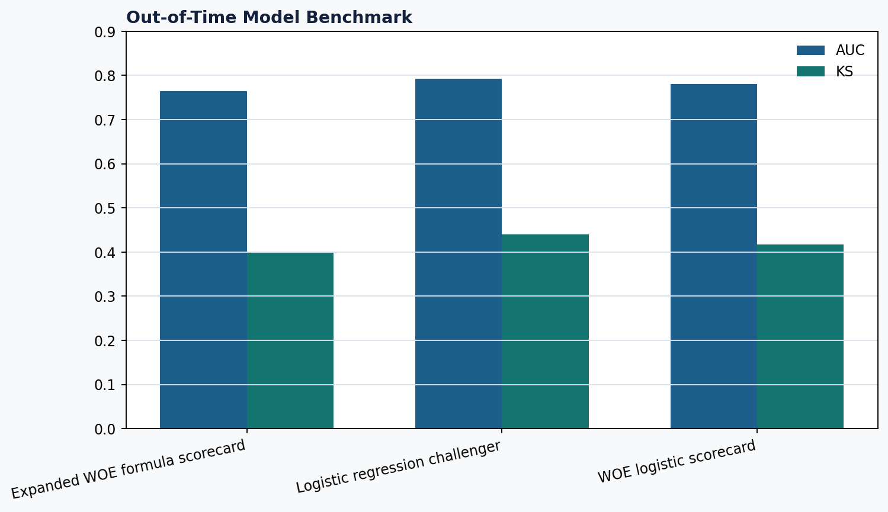
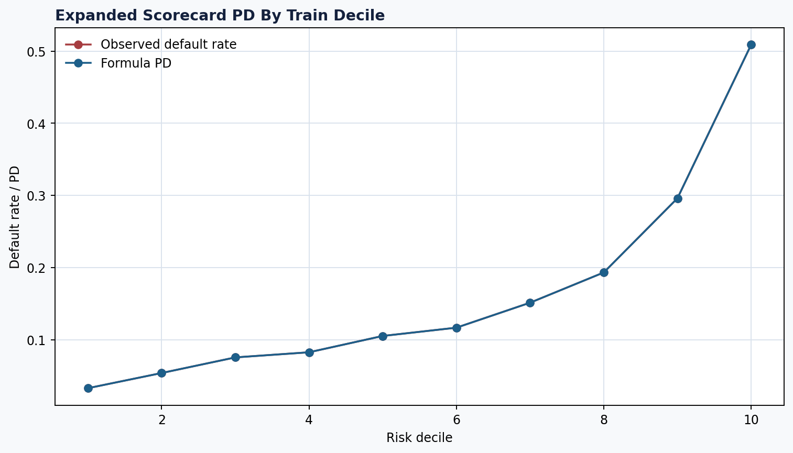
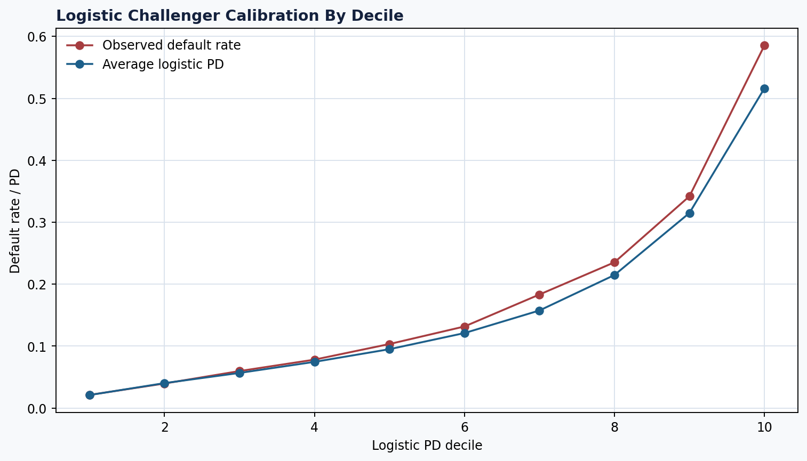
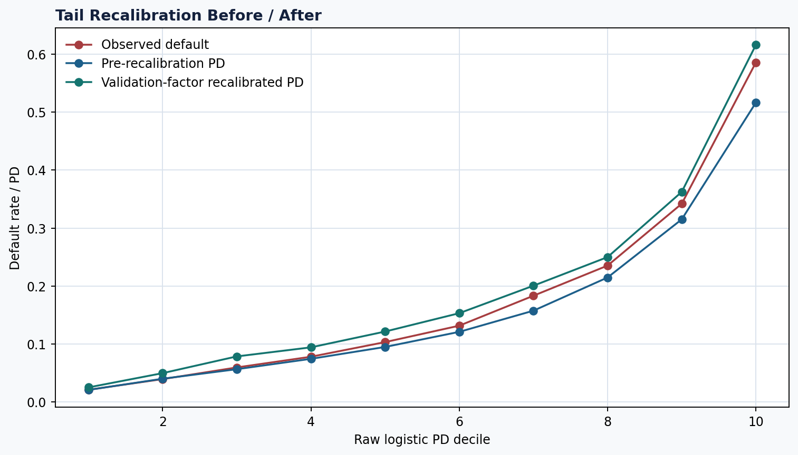
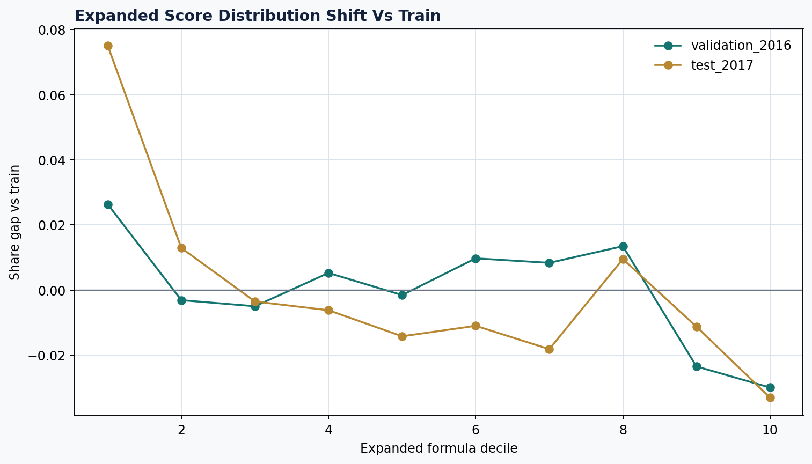
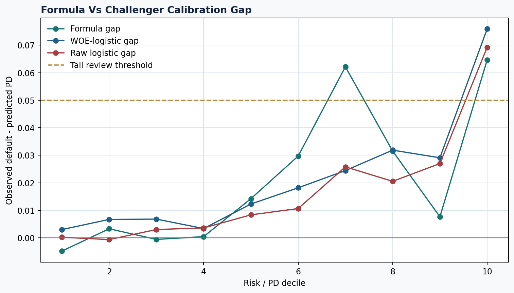
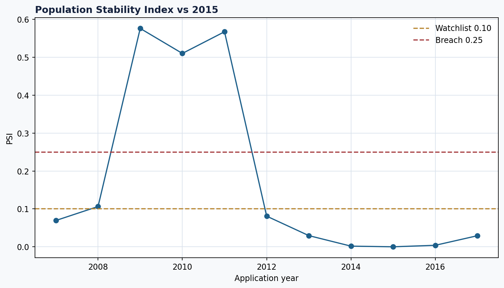

Credit risk logic
Defines observation window, matured target, good/bad population, leakage controls and honest data boundaries before modeling.
Public-ready credit risk portfolio case study
A formula-first credit risk project that starts from risk theory, not random charts: matured good/bad target, WOE/IV scorecard, PD bands, cutoff policy, expected loss, stress/pricing, monitoring, governance, and an enriched scorecard benchmark against logistic regression.

Employer value
Defines observation window, matured target, good/bad population, leakage controls and honest data boundaries before modeling.
Connects PD to score bands, cutoff actions, EAD, LGD, expected loss, pricing and severe stress impact.
Documents calibration, PSI, fairness/proxy review, model limitations, owner/frequency/actions and challenger acceptance criteria.
Modeling result
| Dataset layer | Rows | Used for | Not used for |
|---|---|---|---|
| Portfolio base | 1,347,681 | Target, baseline PD, expected loss, cutoff, monitoring, stress/pricing framework | Enriched model benchmark |
| Enriched accepted sample | 331,865 | Expanded WOE scorecard and logistic challenger | Direct comparison to 1.3M AUC as the same model/population |
| Rejected applicant data | 27,648,741 | Reject inference sensitivity and selection-bias discussion | Labeled reject model training; outcomes are unobserved |
Portfolio foundation rows for target, EL, cutoff and monitoring
Enriched accepted-loan rows for stronger modeling variables
Candidate application-time features in enriched scorecard
Features selected into expanded WOE formula scorecard
| Layer | Role | Test AUC | Test Gini | Test KS | Interpretation |
|---|---|---|---|---|---|
| Thin baseline scorecard | 1.3M-row portfolio baseline | 0.626 | 0.253 | 0.180 | Moderate ranking power; suitable for transparent segmentation, not production automated underwriting. |
| Expanded IV-weighted WOE formula | Primary explanation layer | 0.765 | 0.530 | 0.400 | Transparent heuristic score; not coefficient-estimated logistic scorecard. |
| Final clean WOE-logistic scorecard | Coefficient-estimated scorecard after sign/stability cleanup | 0.781 | 0.562 | 0.418 | WOE-transformed inputs with logistic coefficients converted to points; excludes sign/stability problem variables. |
| Raw logistic regression challenger | Performance benchmark | 0.793 | 0.586 | 0.440 | Better ranking, but kept as challenger because scorecard remains easier to explain and govern. |
| Term sensitivity model | Features | Test AUC | Test KS | Comment |
|---|---|---|---|---|
| Expanded WOE with term | 15 selected WOE features | 0.765 | 0.400 | Current formula scorecard |
| Expanded WOE without term | 14 selected WOE features | 0.734 | 0.350 | Product-tenor sensitivity |
| Logistic with term | 17 candidate features | 0.793 | 0.440 | Current challenger |
| Logistic without term | 16 candidate features | 0.766 | 0.404 | Product-tenor sensitivity |
| Calibration item | Validation | Test | Action | |
|---|---|---|---|---|
| High-risk decile 10 gap | +10.00 pp | +6.92 pp | Tail recalibration required before production use | |
| Test decile 10 after candidate recalibration | Validation-factor method | -3.03 pp | Reduces absolute tail gap; still governance-only until independently validated | |
| Coarse-binned formula scorecard | AUC 0.744 / KS 0.360 | AUC 0.765 / KS 0.401 | Sparse-bin cleanup does not weaken benchmark performance | |
| Post-coarse WOE-logistic points | Minimum-count rule passed | No legacy sparse DTI or rare-purpose final point rows | Final points file is rebuilt after coarse-binning | |
| Coefficient sign review | 14 pass / 1 review | All final clean coefficients pass | `revol_util_band_exp`, `mort_acc_band_exp`, `bankruptcy_band_exp` excluded from final clean scorecard | Benchmark evidence retained separately; final clean points no longer use these variables |
Financial modeling
Total EAD proxy
Baseline expected loss
Approval rate at 20% PD cutoff
Bad capture in review/decline group
Approved expected loss at 20% cutoff
Severe stressed expected loss
Highest required pricing rate
Plan acceptance items tracked
Governance
Reject outcomes, monthly DPD roll-rate, workout LGD, override records, collection actions and internal capital/funding costs are not observed in public data.
Uses sensitivity analysis, proxy assumptions, monitoring triggers, fairness/proxy review, model card language and challenger acceptance criteria.






Public package
README, Model Card, Challenger Summary, Three-Model Calibration, Tail Recalibration Plan, Recalibration Metrics, Final Sign Review, Clean Exclusion Log, Final Model Recommendation, Risk Committee Memo, and Data Access.
credit-risk-scorecard-portfolio-analytics-v1.zip contains the public package with portable forward-slash paths and without internal self-audit files.